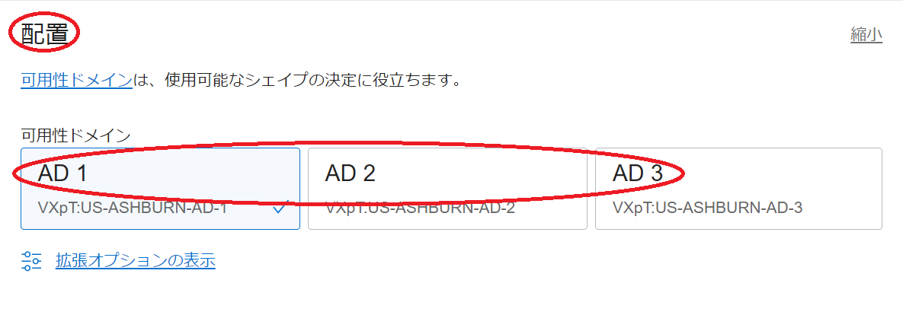
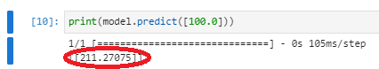
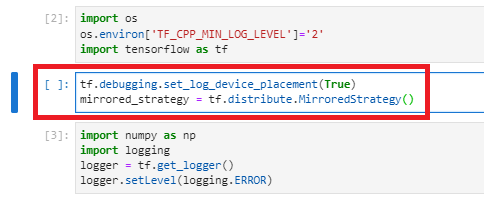
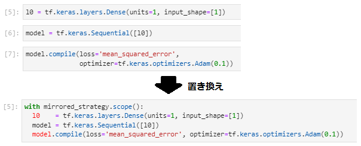
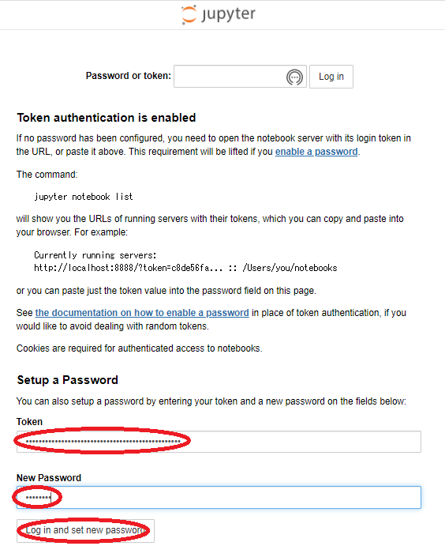

Oracle Cloud Infrastructure（以降OCIと記載）は、GPUを搭載するVMやベアメタルの様々なシェイプが用意されており、自身の機械学習ニーズに合った機械学習環境を構築するには最適なクラウドサービスです。
このチュートリアルは、NVIDIA GPUドライバソフトウェアやCUDAを内包するOCIのGPUシェイプ向けプラットフォームイメージを利用し、以下構成の機械学習環境を構築、TensorFlowを利用するサンプル機械学習プログラムをJupyterLab/Jupyter Notebookから実行します。
- 選択可能な機械学習環境GPUシェイプ
- VM.GPU3.1 (NVIDIA Tesla V100 16 GB x 1)
- VM.GPU3.2 (NVIDIA Tesla V100 16 GB x 2)
- VM.GPU3.4 (NVIDIA Tesla V100 16 GB x 4)
- BM.GPU3.8 (NVIDIA Tesla V100 16 GB x 8)
- BM.GPU4.8 (NVIDIA A100 40 GB x 8)
※：シェイプ詳細は、以下URLを参照。
https://docs.oracle.com/ja-jp/iaas/Content/Compute/References/computeshapes.htm
- 利用可能な機械学習関連ソフトウェア
- TensorFlow
- Keras
- NumPy
- Matplotlib
- Jupyter Notebook
- JupyterLab
- and more （※）
※：全リストは、 2-5. 機械学習関連インストール済みソフトウェア確認 または 3-6. 機械学習関連インストール済みソフトウェア確認 を参照下さい。またここでインストールされていないその他の機械学習関連ソフトウェアは、pipでインストールすることが出来ます。

この機械学習環境は、環境構築直後からTensorFlowを利用し機械学習プログラムをGPU上で高速に実行することが可能です。
またマルチGPUを搭載するGPUシェイプを利用することで、Distributed TensorFlowを使用した複数のGPUに跨る分散トレーニングが可能になります。このチュートリアルの後半では、マルチGPUを搭載する機械学習環境で、サンプルプログラムをDistributed TensorFlowを使用した分散トレーニングモデルに修正、これを複数のGPUに跨って実行します。
所要時間 : 約45分
前提条件 : 機械学習環境を構築するインスタンスを収容するコンパートメント(ルート・コンパートメントでもOKです)の作成と、このコンパートメントに対する必要なリソース管理権限がユーザーに付与されていること。
注意1 : 現在、一時的に無償トライアル環境でのGPUインスタンスの利用を制限させて頂いています。そのため、現在このチュートリアルの手順を実施するには、商用のOCI契約が必要になります。
注意2 : チュートリアル内の画面ショットについては、OCIの現在のコンソール画面と異なっている場合があります。また使用する機械学習関連ソフトウェアのバージョンが異なる場合も、チュートリアル内の画面ショットが異なる場合があります。
0. 機械学習環境構築フロー
本チュートリアルは、OCI関連リソース（ネットワーク関連リソースとGPUインスタンス）の作成をOCIコンソールから行い（ 1. GPUインスタンス起動 ）、続いて起動したGPUインスタンスにログインし機械学習環境の構築を行います。
後半のGPUインスタンス上での機械学習環境構築は、GPUインスタンスのOS上に直接機械学習関連ソフトウェアをSoftware Collectionsを使用してインストールする方法（ 2. GPUインスタンスOS上に機械学習環境構築 ）と、機械学習関連ソフトウェアが予めインストールされたDockerイメージを使用してDockerコンテナ上に作成する方法（ 3. Dockerコンテナ上に機械学習環境構築 ）の、2つを解説します。
またDockerコンテナ上に機械学習環境を構築する方法は、GoogleがDocker Hubから提供する機械学習関連ソフトウェアがインストールされたDockerイメージを使用する方法と、NVIDIAがNVIDIA GPU Cloudから提供するNVIDIA GPU向けに最適化された機械学習関連ソフトウェアがインストールされたDockerイメージを使用する方法の、2つを解説します。
機械学習環境の構築方法は、自身の好みに合わせて選択してください。

NVIDIA GPU CloudのDockerイメージを使用する場合、NVIDIA GPU Cloudのアカウントで予めAPIキーを作成しておく必要があります。この詳細は、以下URLを参照ください。
https://docs.nvidia.com/ngc/ngc-overview/index.html
1. GPUインスタンス起動
本章は、OCIコンソールからGPUインスタンスを起動します。このチュートリアルで使用するプラットフォームイメージは、Oracle Linux 7.9をベースとしたGen2-GPU-2022.05.31-0です。
本チュートリアルは、GPUインスタンスにNVIDIA Tesla V100 16 GBを2枚搭載するVMシェイプのVM.GPU3.2を使用します。
-
OCIコンソールにログインし、GPUインスタンスを起動するリージョンを選択後、 コンピュート → インスタンス とメニューを辿ります。
-
表示される以下画面で、インスタンスの作成 ボタンをクリックします。
-
表示される コンピュート・インスタンスの作成 画面で、以下の情報を入力し 作成 ボタンをクリックします。なお、ここに記載のないフィールドは、デフォルトのままとします。
3.1 名前 フィールド：GPUインスタンスに付与する名前

3.2 コンパートメントに作成 フィールド：GPUインスタンスを構築するコンパートメント

3.3 配置 フィールド
- 可用性ドメイン ：GPUインスタンスを構築する可用性ドメイン

3.4 イメージとシェイプ フィールド

- Shape ：VM.GPU3.2 (Change Shape ボタンをクリックして表示される すべてのシェイプの参照 サイドバーで 仮想マシン → 専門と前世代 で表示される VM.GPU3.2 を選択し 次のドキュメントを確認した上でこれに同意します。 チェックボックスをチェックし シェイプの選択 ボタンをクリック）

- イメージ ：Oracle Linux 7.9 Gen2-GPU-2022.05.31-0 (イメージの変更 ボタンをクリックして表示される すべてのイメージの参照 サイドバーでOracle Linuxのバージョンを適切に選択後 イメージの選択 ボタンをクリック）
3.5 ネットワーキング フィールド
- プライマリ・ネットワーク ： 新規仮想クラウド・ネットワークの作成
-
コンパートメントに作成 ：GPUインスタンスを構築するコンパートメント
3.6 SSHキーの追加 フィールド
- SSHキー ：GPUインスタンスにログインする際使用するSSH秘密鍵に対応する公開鍵
- 公開鍵ファイルのアップロード（ 公開キー・ファイル(.pub)のアップロード ）と公開鍵のフィールドへの貼り付け（ 公開キーの貼付け ）が選択可能
-
表示される以下 作業リクエスト 画面で、左上のステータスが プロビジョニング中 と表示されれば、GPUインスタンスの構築が実施されています。
ステータスが 実行中 となれば、GPUインスタンスの構築が完了しています。
2. GPUインスタンスOS上に機械学習環境構築
本章は、デプロイされたGPUインスタンスのOS上に直接機械学習関連ソフトウェアをインストール、Python・TensorFlow・JupyterLab環境を構築します。
2-1. Python・TenforFlow・JupyterLab環境構築
本チュートリアルで使用しているOracle Linux 7.9は、内包されているPythonのバージョンが3.6と古いため、まずPython 3.8をインストールします。この際、Oracle Linux 7.9の様々なパッケージから利用されるPython 3.6を残し、複数のバージョンを混在させることが可能なSoftware Collectionsを使用してPython 3.8を追加でインストール、このPython 3.8をベースにTensorFlowやJupyterLab等の機械学習関連プログラム環境を構築します。
-
GPUインスタンスログイン
1. GPUインスタンス起動 の手順の最後に表示される 作業リクエスト 画面で、パブリックIPアドレス フィールドに表示されているGPUインスタンスのIPアドレスを使用し、SSHでGPUインスタンスにopcアカウントでインターネット経由ログインします。
このSSH接続では、GPUインスタンス構築時に指定したSSH公開鍵に対応する秘密鍵を使用します。
> ssh -i path_to_ssh_secret_key opc@123.456.789.123 -
Python 3.8インストール
rootにスイッチして以下コマンドを実行し、Software Collectionsから提供されるPython 3.8をインストール、これを有効化したサブシェルを起動、pipとsetuptoolsをアップグレードします。
> yum -y install rh-python38 > scl enable rh-python38 bash > pip install --upgrade pip setuptools > exit > scl enable rh-python38 bash -
TensorFlow・JupyterLab・Matplotlibインストール
以下コマンドを実行し、TensorFlow・JupyterLab・Matplotlibをインストールします。
> pip install tensorflow jupyterlab matplotlib -
JupyterLabログインパスワード初期化
opcにスイッチして以下コマンドを実行し、JupyterLabにログインする際のパスワードを初期化します。
> scl enable rh-python38 bash > jupyter lab password Enter password: Verify password: [JupyterPasswordApp] Wrote hashed password to /home/opc/.jupyter/jupyter_server_config.json -
JupyterLabのsystemdへの登録
rootにスイッチし、JupyterLabをsystemdに登録するための設定ファイルを以下のように作成します。
> cat /etc/systemd/system/jupyterlab.service [Unit] Description=Jupyter Lab [Service] Type=simple PIDFile=/var/run/jupyter-lab.pid ExecStart=/opt/rh/rh-python38/root/usr/bin/python /opt/rh/rh-python38/root/usr/local/bin/jupyter-lab --app-dir=/opt/rh/rh-python38/root/usr/local/share/jupyter/lab/ WorkingDirectory=/home/opc/ User=opc Group=opc Restart=always [Install] WantedBy=multi-user.target -
JupyterLab起動
以下コマンドで、JupyterLabを起動します。
> systemctl daemon-reload > systemctl start jupyterlab > systemctl enable jupyterlab
2-2. TenforFlow・JupyterLab稼働確認
本章は、TensorFlowが認識するGPUカードの枚数を確認するプログラムを実行し、TensorFlowとJupyterLabの稼働を確認します。
-
稼働確認プログラムコピー
以下稼働確認プログラムを、GPUインスタンスのopcアカウントのホームディレクトリ直下にファイル名”num_gpu.ipynb”でコピーします。
{ "cells": [ { "cell_type": "code", "execution_count": null, "metadata": {}, "outputs": [], "source": [ "import os\n", "os.environ['TF_CPP_MIN_LOG_LEVEL']='2'\n", "import tensorflow as tf\n", "print(\"Num GPUs Available: \", len(tf.config.list_physical_devices('GPU')))" ] } ], "metadata": { "kernelspec": { "display_name": "Python 3", "language": "python", "name": "python3" }, "language_info": { "codemirror_mode": { "name": "ipython", "version": 3 }, "file_extension": ".py", "mimetype": "text/x-python", "name": "python", "nbconvert_exporter": "python", "pygments_lexer": "ipython3", "version": "3.6.8" } }, "nbformat": 4, "nbformat_minor": 4 } -
SSHポートフォワード作成
構築したJupyterLabは、自身のGPUインスタンスからのみアクセス可能になっています。
そこで、以下コマンドをJupyterLabにアクセスするブラウザを起動する端末で実行し、この端末の8888番ポートをGPUインスタンスの8888番ポート(JupyterLabがアクセスを待ち受けるポート)に転送するSSHポートフォワードを作成します。
> ssh -i path_to_ssh_secret_key -L 8888:localhost:8888 opc@123.456.789.123 -
JupyterLabへのアクセス
ブラウザを起動し、アドレスに”localhost:8888”を指定してJupyterLabにアクセスし、表示される以下画面の Password フィールドに先に登録したパスワードを入力、 Log in ボタンをクリックします。

-
稼働確認プログラム実行
以下ブラウザ画面に表示される、先にコピーした稼働確認プログラムをクリックし、

表示される以下ブラウザ画面の Run the selected cells and advance ボタンをクリックして稼働確認プログラムを実行、”Num GPUs Available:”の値が使用するGPUシェイプに搭載されるGPU枚数に一致することを確認します。

2-3. JupyterLabで機械学習プログラム実行
本章は、GPUインスタンスのJupyterLabにアクセスし、サンプル機械学習プログラムを実行してその動作を確認します。
-
サンプル機械学習プログラムコピー
以下サンプルプログラムを、GPUインスタンスのopcアカウントのホームディレクトリ直下にファイル名”celsious2fahrenheit.ipynb”でコピーします。
このプログラムは、既知の摂氏・華氏対応データからその変換式を学習し、未知の摂氏表記温度から対応する華氏を予測します。
{ "cells": [ { "cell_type": "code", "execution_count": 19, "metadata": {}, "outputs": [], "source": [ "#@title Licensed under the Apache License, Version 2.0 (the \"License\");\n", "# you may not use this file except in compliance with the License.\n", "# You may obtain a copy of the License at\n", "#\n", "# https://www.apache.org/licenses/LICENSE-2.0\n", "#\n", "# Unless required by applicable law or agreed to in writing, software\n", "# distributed under the License is distributed on an \"AS IS\" BASIS,\n", "# WITHOUT WARRANTIES OR CONDITIONS OF ANY KIND, either express or implied.\n", "# See the License for the specific language governing permissions and\n", "# limitations under the License." ] }, { "cell_type": "code", "execution_count": null, "metadata": {}, "outputs": [], "source": [ "import os\n", "os.environ['TF_CPP_MIN_LOG_LEVEL']='2'\n", "import tensorflow as tf" ] }, { "cell_type": "code", "execution_count": null, "metadata": {}, "outputs": [], "source": [ "import numpy as np\n", "import logging\n", "logger = tf.get_logger()\n", "logger.setLevel(logging.ERROR)" ] }, { "cell_type": "code", "execution_count": null, "metadata": {}, "outputs": [], "source": [ "celsius_q = np.array([-40, -10, 0, 8, 15, 22, 38], dtype=float)\n", "fahrenheit_a = np.array([-40, 14, 32, 46, 59, 72, 100], dtype=float)\n", "\n", "for i,c in enumerate(celsius_q):\n", " print(\"{} degrees Celsius = {} degrees Fahrenheit\".format(c, fahrenheit_a[i]))" ] }, { "cell_type": "code", "execution_count": null, "metadata": {}, "outputs": [], "source": [ "l0 = tf.keras.layers.Dense(units=1, input_shape=[1])" ] }, { "cell_type": "code", "execution_count": null, "metadata": {}, "outputs": [], "source": [ "model = tf.keras.Sequential([l0])" ] }, { "cell_type": "code", "execution_count": null, "metadata": {}, "outputs": [], "source": [ "model.compile(loss='mean_squared_error',\n", " optimizer=tf.keras.optimizers.Adam(0.1))" ] }, { "cell_type": "code", "execution_count": null, "metadata": {}, "outputs": [], "source": [ "history = model.fit(celsius_q, fahrenheit_a, epochs=500, verbose=False)\n", "print(\"Finished training the model\")" ] }, { "cell_type": "code", "execution_count": null, "metadata": {}, "outputs": [], "source": [ "import matplotlib.pyplot as plt\n", "plt.xlabel('Epoch Number')\n", "plt.ylabel(\"Loss Magnitude\")\n", "plt.plot(history.history['loss'])" ] }, { "cell_type": "code", "execution_count": null, "metadata": {}, "outputs": [], "source": [ "print(model.predict([100.0]))" ] } ], "metadata": { "kernelspec": { "display_name": "Python 3", "language": "python", "name": "python3" }, "language_info": { "codemirror_mode": { "name": "ipython", "version": 3 }, "file_extension": ".py", "mimetype": "text/x-python", "name": "python", "nbconvert_exporter": "python", "pygments_lexer": "ipython3", "version": "3.6.8" } }, "nbformat": 4, "nbformat_minor": 4 } -
サンプルプログラム実行
JupyterLabにログインした直後のブラウザ画面をリロードし、以下画面に表示される、先にコピーしたサンプル機械学習プログラムをクリックします。

表示される以下ブラウザ画面の Restart Kernel and Run All Cells ボタンをクリックします。

表示される以下ブラウザ画面の Restart ボタンをクリックし、サンプルプログラムを実行します。
実行した結果が表示される以下ブラウザ画面で、100度（摂氏）に対応する華氏の予測値が変換式（f=1.8c+32）から計算される212度（華氏）に近い値であることを確認します。

2-4. Distributed TensorFlowを使用した分散トレーニングモデル実行
本章は、先に実行した摂氏から華氏を予測するサンプルプログラムを元に、Distributed TensorFlowを使用する複数のGPUに跨った分散トレーニングモデルに修正、これを実行します。
-
サンプルプログラムのDistributed TensorFlowを使用した分散トレーニングモデルへの修正
2番目と3番目のセルの間に、以下のコードを挿入します。
tf.debugging.set_log_device_placement(True) mirrored_strategy = tf.distribute.MirroredStrategy()このコードは、想定通り複数のGPUに跨ったトレーニングが行われているかを確認するためのデバッグメッセージ出力設定と、TensorFlowのMirroedStrategy作成を行います。

次に、5番目から7番目までのセルを、以下のコードに置き換えます。
with mirrored_strategy.scope(): l0 = tf.keras.layers.Dense(units=1, input_shape=[1]) model = tf.keras.Sequential([l0]) model.compile(loss='mean_squared_error', optimizer=tf.keras.optimizers.Adam(0.1))このコードは、レイヤー定義・レイヤーアセンブル・モデルコンパイルをMirroedStrategyのスコープ内に移動し、分散トレーニングモデルを定義しています。

-
分散トレーニングモデルの実行
Restart Kernel and Run All Cells ボタンを使用し、修正後のサンプルプログラムを実行、デバッグメッセージから複数のGPUに跨ったトレーニングが行われていることを確認します。
この際、デバッグメッセージが大量に出力されるため、プログラム実行時間が修正前より長くなることに注意します。
複数GPUに跨ったトレーニングが行われていることを確認したら、デバッグメッセージ出力設定を削除します。
2-5. 機械学習関連インストール済みソフトウェア確認
本章は、以下コマンドを実行し、GPUインスタンスにインストールされている、機械学習関連ソフトウェアとそのバージョンを確認します。
> scl enable rh-python38 bash
> pip list
Package Version
---------------------------- -----------
absl-py 1.1.0
anyio 3.6.1
argon2-cffi 21.3.0
argon2-cffi-bindings 21.2.0
asttokens 2.0.5
astunparse 1.6.3
attrs 21.4.0
Babel 2.10.2
backcall 0.2.0
beautifulsoup4 4.11.1
bleach 5.0.0
cachetools 5.2.0
certifi 2022.5.18.1
cffi 1.15.0
charset-normalizer 2.0.12
cycler 0.11.0
debugpy 1.6.0
decorator 5.1.1
defusedxml 0.7.1
entrypoints 0.4
executing 0.8.3
fastjsonschema 2.15.3
flatbuffers 1.12
fonttools 4.33.3
gast 0.4.0
google-auth 2.7.0
google-auth-oauthlib 0.4.6
google-pasta 0.2.0
grpcio 1.46.3
h5py 3.7.0
idna 3.3
importlib-metadata 4.11.4
importlib-resources 5.7.1
ipykernel 6.14.0
ipython 8.4.0
ipython-genutils 0.2.0
jedi 0.18.1
Jinja2 3.1.2
json5 0.9.8
jsonschema 4.6.0
jupyter-client 7.3.4
jupyter-core 4.10.0
jupyter-server 1.17.1
jupyterlab 3.4.3
jupyterlab-pygments 0.2.2
jupyterlab-server 2.14.0
keras 2.9.0
Keras-Preprocessing 1.1.2
kiwisolver 1.4.3
libclang 14.0.1
Markdown 3.3.7
MarkupSafe 2.1.1
matplotlib 3.5.2
matplotlib-inline 0.1.3
mistune 0.8.4
nbclassic 0.3.7
nbclient 0.6.4
nbconvert 6.5.0
nbformat 5.4.0
nest-asyncio 1.5.5
notebook 6.4.12
notebook-shim 0.1.0
numpy 1.22.4
oauthlib 3.2.0
opt-einsum 3.3.0
packaging 21.3
pandocfilters 1.5.0
parso 0.8.3
pexpect 4.8.0
pickleshare 0.7.5
Pillow 9.1.1
pip 22.1.2
prometheus-client 0.14.1
prompt-toolkit 3.0.29
protobuf 3.19.4
psutil 5.9.1
ptyprocess 0.7.0
pure-eval 0.2.2
pyasn1 0.4.8
pyasn1-modules 0.2.8
pycparser 2.21
Pygments 2.12.0
pyparsing 3.0.9
pyrsistent 0.18.1
python-dateutil 2.8.2
pytz 2022.1
pyzmq 23.1.0
requests 2.28.0
requests-oauthlib 1.3.1
rsa 4.8
Send2Trash 1.8.0
setuptools 62.4.0
six 1.16.0
sniffio 1.2.0
soupsieve 2.3.2.post1
stack-data 0.2.0
tensorboard 2.9.1
tensorboard-data-server 0.6.1
tensorboard-plugin-wit 1.8.1
tensorflow 2.9.1
tensorflow-estimator 2.9.0
tensorflow-io-gcs-filesystem 0.26.0
termcolor 1.1.0
terminado 0.15.0
tinycss2 1.1.1
tornado 6.1
traitlets 5.2.2.post1
typing_extensions 4.2.0
urllib3 1.26.9
wcwidth 0.2.5
webencodings 0.5.1
websocket-client 1.3.2
Werkzeug 2.1.2
wheel 0.37.1
wrapt 1.14.1
zipp 3.8.0
3. Dockerコンテナ上に機械学習環境構築
本章は、デプロイされたGPUインスタンス上にDockerコンテナ環境を構築、機械学習関連ソフトウェアが予めインストールされたDockerイメージを使用して、GPUを利用することが可能なTensorFlow・Jupyter Notebook環境をDockerコンテナ上に構築します。
3-1. Dockerコンテナ環境構築
本章は、Docker Community EditionとNVIDIA Container Toolkitを使用し、GPUを利用することが可能なDockerコンテナ環境を構築します。
-
GPUインスタンスログイン
1. GPUインスタンス起動 の手順の最後に表示される 作業リクエスト 画面で、パブリックIPアドレス フィールドに表示されているGPUインスタンスのIPアドレスを使用し、SSHでGPUインスタンスにopcアカウントでインターネット経由ログインします。
このSSH接続では、GPUインスタンス構築時に指定したSSH公開鍵に対応する秘密鍵を使用します。
> ssh -i path_to_ssh_secret_key opc@123.456.789.123 -
Docker Community Editionインストール・起動
rootにスイッチして以下コマンドを実行し、Docker Community Editionをインストール・起動します。
> yum-config-manager --enable ol7_developer > yum-config-manager --add-repo https://download.docker.com/linux/centos/docker-ce.repo > yum -y install docker-ce > systemctl start docker > systemctl enable docker -
NVIDIA Container Toolkitインストール
以下コマンドを実行し、NVIDIA Container Toolkitをインストールします。
> yum-config-manager --add-repo https://nvidia.github.io/libnvidia-container/rhel7.9/libnvidia-container.repo > yum-config-manager --enable libnvidia-container-experimental > yum -y install nvidia-container-toolkit > systemctl restart docker -
Dockerコンテナ環境稼働確認
以下コマンドを実行し、Docker Community EditionとNVIDIA Container Toolkitによるコンテナ環境からGPUが利用可能であることを、nvidia-smiコマンドの出力で確認します。
> docker run --rm --gpus all nvidia/cuda:11.0.3-base-ubuntu20.04 nvidia-smi Unable to find image 'nvidia/cuda:11.0.3-base-ubuntu20.04' locally 11.0.3-base-ubuntu20.04: Pulling from nvidia/cuda d5fd17ec1767: Pull complete ea7643e57386: Pull complete 622a04926279: Pull complete 18fcb7509e42: Pull complete 21e5db7c1fa2: Pull complete Digest: sha256:1db9418b1c9070cdcbd2d0d9980b52bd5cd20216265405fdb7e089c7ff96a494 Status: Downloaded newer image for nvidia/cuda:11.0.3-base-ubuntu20.04 Mon Jun 20 06:52:30 2022 +-----------------------------------------------------------------------------+ | NVIDIA-SMI 470.129.06 Driver Version: 470.129.06 CUDA Version: 11.4 | |-------------------------------+----------------------+----------------------+ | GPU Name Persistence-M| Bus-Id Disp.A | Volatile Uncorr. ECC | | Fan Temp Perf Pwr:Usage/Cap| Memory-Usage | GPU-Util Compute M. | | | | MIG M. | |===============================+======================+======================| | 0 Tesla V100-SXM2... Off | 00000000:00:04.0 Off | 0 | | N/A 38C P0 39W / 300W | 0MiB / 16160MiB | 0% Default | | | | N/A | +-------------------------------+----------------------+----------------------+ | 1 Tesla V100-SXM2... Off | 00000000:00:05.0 Off | 0 | | N/A 39C P0 40W / 300W | 0MiB / 16160MiB | 4% Default | | | | N/A | +-------------------------------+----------------------+----------------------+ +-----------------------------------------------------------------------------+ | Processes: | | GPU GI CI PID Type Process name GPU Memory | | ID ID Usage | |=============================================================================| | No running processes found | +-----------------------------------------------------------------------------+
3-2. Python・TenforFlow・Jupyter Notebook環境構築
本章は、機械学習関連ソフトウェアが予めインストールされたDockerイメージを使用して、TensorFlowとJupyter Notebookが利用可能なDockerコンテナを起動します。
利用するDockerイメージは、GoogleがDocker Hubから提供するDockerイメージと、NVIDIAがNVIDIA GPU Cloudから提供するDockerイメージの、何れを利用することも可能です。詳細は、 0. 機械学習環境構築フロー を参照ください。
3-2-1. GoogleがDocker Hubから提供するDockerイメージの場合
-
Dockerコンテナ起動
以下コマンドを実行し、Dockerコンテナを起動します。
このコマンドは、GPUインスタンスに搭載される全てのGPUにアクセスすることが可能で、GPUインスタンスの8888番ポートをDockerコンテナの8888番ポート（Jupyter Notebookがアクセスを待ち受けるポート）に転送するコンテナを起動します。
> docker run -d --gpus all --name mlenv -p 8888:8888 tensorflow/tensorflow:latest-gpu-py3-jupyterここで利用するDockerイメージは、コンテナ起動時にJupyter Notebookを8888番ポートで自動的に起動します。
-
JupyterLabパスワードログイン設定
以下コマンドを実行し、JupyterLabにパスワードでログインできるようにします。
> docker exec -it mlenv jupyter notebook --generate-config > docker exec -it mlenv sed -i 's/#c.NotebookApp.allow_password_change = True/c.NotebookApp.allow_password_change = True/g' /root/.jupyter/jupyter_notebook_config.pyまた以下コマンドを実行し、JupyterLabに初めてログインする際に必要なトークンを控えておきます。
> docker exec -it mlenv jupyter notebook list Currently running servers: http://0.0.0.0:8888/?token=1479479473f5f58b569f54b9fea5b8cfa4f22cf7aa6e4299 :: /tf
3-2-2. NVIDIAがNVIDIA GPU Cloudから提供するDockerイメージの場合
-
NVIDIA GPU Cloudログイン
以下コマンドを実行し、NVIDIA GPU Cloudにログインします。ここでユーザ名は、固定的に $oauthtoken を使用し、パスワードはNVIDIA GPU Cloud上で生成したAPIキーを入力します。
> docker login nvcr.io Username: $oauthtoken Password: xxxxxxxxxxxxxxxxxxxxxxx -
Dockerコンテナ起動
以下コマンドを実行し、Dockerコンテナを起動します。
このコマンドは、GPUインスタンスに搭載される全てのGPUにアクセスすることが可能で、GPUインスタンスの8888番ポートをDockerコンテナの8888番ポート（Jupyter Notebookがアクセスを待ち受けるポート）に転送するコンテナを起動します。
> docker run -d --gpus all --name mlenv -it -p 8888:8888 nvcr.io/nvidia/tensorflow:22.06-tf2-py3 /bin/bash -
JupyterLabパスワードログイン設定
以下コマンドを実行し、JupyterLabにパスワードでログインできるようにします。
> docker exec -it mlenv jupyter notebook --generate-config > docker exec -it mlenv sed -i 's/# c.NotebookApp.allow_password_change = True/c.NotebookApp.allow_password_change = True/g' /root/.jupyter/jupyter_notebook_config.py -
Jupyter Notebook起動
以下コマンドを実行し、Jupyter Notebookを起動します。
> docker exec -d -it mlenv jupyter-notebook --allow-rootまた以下コマンドを実行し、Jupyter Notebookに初めてログインする際に必要なトークンを控えておきます。
> docker exec -it mlenv jupyter notebook list Currently running servers: http://0.0.0.0:8888/?token=dc42479929f3d657fde8c0324f1b8888bf71fcdee6f14a8e :: /workspace
3-3. TenforFlow・Jupyter Notebook稼働確認
本章は、TensorFlowが認識するGPUカードの枚数を確認するプログラムを実行し、TensorFlowとJupyter Notebookの稼働を確認します。
-
稼働確認プログラムコピー
以下稼働確認プログラムを、GPUインスタンスの/tmpディレクトリにファイル名”num_gpu.ipynb”でコピーします。
{ "cells": [ { "cell_type": "code", "execution_count": null, "metadata": {}, "outputs": [], "source": [ "import os\n", "os.environ['TF_CPP_MIN_LOG_LEVEL']='2'\n", "import tensorflow as tf\n", "print(\"Num GPUs Available: \", len(tf.config.list_physical_devices('GPU')))" ] } ], "metadata": { "kernelspec": { "display_name": "Python 3", "language": "python", "name": "python3" }, "language_info": { "codemirror_mode": { "name": "ipython", "version": 3 }, "file_extension": ".py", "mimetype": "text/x-python", "name": "python", "nbconvert_exporter": "python", "pygments_lexer": "ipython3", "version": "3.6.8" } }, "nbformat": 4, "nbformat_minor": 4 }次に以下コマンドで、この稼働確認プログラムを起動したDockerコンテナにコピーします。
・GoogleがDocker Hubから提供するDockerイメージの場合
> docker cp /tmp/num_gpu.ipynb mlenv:/tf/・NVIDIAがNVIDIA GPU Cloudから提供するDockerイメージの場合
> docker cp /tmp/num_gpu.ipynb mlenv:/workspace/ -
SSHポートフォワード作成
起動したJupyter Notebookは、GPUインスタンスが接続されるサブネットのセキュリティリストにより直接インターネットからアクセスすることが出来ません。
そこで、以下コマンドをJupyter Notebookにアクセスするブラウザを起動する端末で実行し、この端末の8888番ポート→GPUインスタンスの8888番ポート→Dockerコンテナの8888番ポート(Jupyter Notebookがアクセスを待ち受けるポート)に転送するSSHポートフォワードを作成します。
> ssh -i path_to_ssh_secret_key -L 8888:localhost:8888 opc@123.456.789.123 -
Jupyter Notebookへのアクセス
ブラウザを起動し、アドレスに localhost:8888 を指定してJupyter Notebookにアクセスし、表示される以下画面の Token フィールドに先に調べたトークンを入力、 New Password フィールドに今後のログインで使用するパスワードを入力、 Log in and set new password ボタンをクリックします。

また以下コマンドを実行し、変更後のパスワードが利用可能となるようDockerコンテナを再起動します。
・GoogleがDocker Hubから提供するDockerイメージの場合
> docker container restart mlenv・NVIDIAがNVIDIA GPU Cloudから提供するDockerイメージの場合
> docker container restart mlenv > docker exec -d -it mlenv jupyter-notebook --allow-root再度ブラウザからアドレス localhost:8888 を指定してJupyter Notebookにアクセスし、先に設定した新パスワードで再度Jupyter Notebookにログインします。
-
稼働確認プログラム実行
以下ブラウザ画面に表示される、先にコピーした稼働確認プログラムをクリックし、

表示される以下ブラウザ画面の Run ボタンをクリックして稼働確認プログラムを実行、”Num GPUs Available:”の値が使用するGPUシェイプに搭載されるGPU枚数に一致することを確認します。
3-4. Jupyter Notebookで機械学習プログラム実行
本章は、DockerコンテナのJupyter Notebookにアクセスし、サンプル機械学習プログラムを実行してその動作を確認します。
-
サンプル機械学習プログラムコピー
以下サンプルプログラムを、GPUインスタンスの/tmpディレクトリにファイル名”celsious2fahrenheit.ipynb”でコピーします。
このプログラムは、既知の摂氏・華氏対応データからその変換式を学習し、未知の摂氏表記温度から対応する華氏を予測します。
{ "cells": [ { "cell_type": "code", "execution_count": 19, "metadata": {}, "outputs": [], "source": [ "#@title Licensed under the Apache License, Version 2.0 (the \"License\");\n", "# you may not use this file except in compliance with the License.\n", "# You may obtain a copy of the License at\n", "#\n", "# https://www.apache.org/licenses/LICENSE-2.0\n", "#\n", "# Unless required by applicable law or agreed to in writing, software\n", "# distributed under the License is distributed on an \"AS IS\" BASIS,\n", "# WITHOUT WARRANTIES OR CONDITIONS OF ANY KIND, either express or implied.\n", "# See the License for the specific language governing permissions and\n", "# limitations under the License." ] }, { "cell_type": "code", "execution_count": null, "metadata": {}, "outputs": [], "source": [ "import os\n", "os.environ['TF_CPP_MIN_LOG_LEVEL']='2'\n", "import tensorflow as tf" ] }, { "cell_type": "code", "execution_count": null, "metadata": {}, "outputs": [], "source": [ "import numpy as np\n", "import logging\n", "logger = tf.get_logger()\n", "logger.setLevel(logging.ERROR)" ] }, { "cell_type": "code", "execution_count": null, "metadata": {}, "outputs": [], "source": [ "celsius_q = np.array([-40, -10, 0, 8, 15, 22, 38], dtype=float)\n", "fahrenheit_a = np.array([-40, 14, 32, 46, 59, 72, 100], dtype=float)\n", "\n", "for i,c in enumerate(celsius_q):\n", " print(\"{} degrees Celsius = {} degrees Fahrenheit\".format(c, fahrenheit_a[i]))" ] }, { "cell_type": "code", "execution_count": null, "metadata": {}, "outputs": [], "source": [ "l0 = tf.keras.layers.Dense(units=1, input_shape=[1])" ] }, { "cell_type": "code", "execution_count": null, "metadata": {}, "outputs": [], "source": [ "model = tf.keras.Sequential([l0])" ] }, { "cell_type": "code", "execution_count": null, "metadata": {}, "outputs": [], "source": [ "model.compile(loss='mean_squared_error',\n", " optimizer=tf.keras.optimizers.Adam(0.1))" ] }, { "cell_type": "code", "execution_count": null, "metadata": {}, "outputs": [], "source": [ "history = model.fit(celsius_q, fahrenheit_a, epochs=500, verbose=False)\n", "print(\"Finished training the model\")" ] }, { "cell_type": "code", "execution_count": null, "metadata": {}, "outputs": [], "source": [ "import matplotlib.pyplot as plt\n", "plt.xlabel('Epoch Number')\n", "plt.ylabel(\"Loss Magnitude\")\n", "plt.plot(history.history['loss'])" ] }, { "cell_type": "code", "execution_count": null, "metadata": {}, "outputs": [], "source": [ "print(model.predict([100.0]))" ] } ], "metadata": { "kernelspec": { "display_name": "Python 3", "language": "python", "name": "python3" }, "language_info": { "codemirror_mode": { "name": "ipython", "version": 3 }, "file_extension": ".py", "mimetype": "text/x-python", "name": "python", "nbconvert_exporter": "python", "pygments_lexer": "ipython3", "version": "3.6.8" } }, "nbformat": 4, "nbformat_minor": 4 }次に以下コマンドで、この稼働確認プログラムを起動したDockerコンテナにコピーします。
・GoogleがDocker Hubから提供するDockerイメージの場合
> docker cp /tmp/celsious2fahrenheit.ipynb mlenv:/tf/・NVIDIAがNVIDIA GPU Cloudから提供するDockerイメージの場合
> docker cp /tmp/celsious2fahrenheit.ipynb mlenv:/workspace/ -
サンプルプログラム実行
Jupyter Notebookにログインした直後のブラウザ画面をリロードし、以下画面に表示される、先にコピーしたサンプル機械学習プログラムをクリックします。
表示される以下ブラウザ画面の Restart the kernel, then re-run the whole notebook ボタンをクリックします。
表示される以下ブラウザ画面の Restart and run all cells ボタンをクリックし、サンプルプログラムを実行します。
実行した結果が表示される以下ブラウザ画面で、100度（摂氏）に対応する華氏の予測値が変換式（f=1.8c+32）から計算される212度（華氏）に近い値であることを確認します。

3-5. Distributed TensorFlowを使用した分散トレーニングモデル実行
本章は、先に実行した摂氏から華氏を予測するサンプルプログラムを元に、Distributed TensorFlowを使用する複数のGPUに跨った分散トレーニングモデルに修正、これを実行します。
-
サンプルプログラムのDistributed TensorFlowを使用した分散トレーニングモデルへの修正
2番目と3番目のセルの間に、以下のコードを挿入します。
tf.debugging.set_log_device_placement(True) mirrored_strategy = tf.distribute.MirroredStrategy()このコードは、想定通り複数のGPUに跨ったトレーニングが行われているかを確認するためのデバッグメッセージ出力設定と、TensorFlowのMirroedStrategy作成を行います。
次に、5番目から7番目までのセルを、以下のコードに置き換えます。
with mirrored_strategy.scope(): l0 = tf.keras.layers.Dense(units=1, input_shape=[1]) model = tf.keras.Sequential([l0]) model.compile(loss='mean_squared_error', optimizer=tf.keras.optimizers.Adam(0.1))このコードは、レイヤー定義・レイヤーアセンブル・モデルコンパイルをMirroedStrategyのスコープ内に移動し、分散トレーニングモデルを定義しています。
-
分散トレーニングモデルの実行
Restart the kernel, then re-run the whole notebook ボタンを使用し、修正後のサンプルプログラムを実行、デバッグメッセージから複数のGPUに跨ったトレーニングが行われていることを確認します。
3-6. 機械学習関連インストール済みソフトウェア確認
本章は、以下コマンドを実行し、Dockerコンテナにインストールされている、機械学習関連ソフトウェアとそのバージョンを確認します。
3-6-1. GoogleがDocker Hubから提供するDockerイメージの場合
> docker exec -it mlenv pip list
Package Version
-------------------- ----------
absl-py 0.9.0
asn1crypto 0.24.0
astor 0.8.1
attrs 19.3.0
backcall 0.1.0
bleach 3.1.0
cachetools 4.0.0
certifi 2019.11.28
chardet 3.0.4
cryptography 2.1.4
cycler 0.10.0
decorator 4.4.1
defusedxml 0.6.0
entrypoints 0.3
enum34 1.1.6
gast 0.2.2
google-auth 1.10.0
google-auth-oauthlib 0.4.1
google-pasta 0.1.8
grpcio 1.26.0
h5py 2.10.0
idna 2.6
importlib-metadata 1.4.0
ipykernel 5.1.3
ipython 7.11.1
ipython-genutils 0.2.0
ipywidgets 7.5.1
jedi 0.15.2
Jinja2 2.10.3
jsonschema 3.2.0
jupyter 1.0.0
jupyter-client 5.3.4
jupyter-console 6.0.0
jupyter-core 4.6.1
jupyter-http-over-ws 0.0.7
Keras-Applications 1.0.8
Keras-Preprocessing 1.1.0
keyring 10.6.0
keyrings.alt 3.0
kiwisolver 1.1.0
Markdown 3.1.1
MarkupSafe 1.1.1
matplotlib 3.1.2
mistune 0.8.4
more-itertools 8.0.2
nbconvert 5.6.1
nbformat 5.0.3
notebook 6.0.2
numpy 1.18.1
oauthlib 3.1.0
opt-einsum 3.1.0
pandocfilters 1.4.2
parso 0.5.2
pexpect 4.7.0
pickleshare 0.7.5
pip 19.3.1
prometheus-client 0.7.1
prompt-toolkit 2.0.10
protobuf 3.11.2
ptyprocess 0.6.0
pyasn1 0.4.8
pyasn1-modules 0.2.8
pycrypto 2.6.1
Pygments 2.5.2
pygobject 3.26.1
pyparsing 2.4.6
pyrsistent 0.15.7
python-apt 1.6.4
python-dateutil 2.8.1
pyxdg 0.25
pyzmq 18.1.1
qtconsole 4.6.0
requests 2.22.0
requests-oauthlib 1.3.0
rsa 4.0
scipy 1.4.1
SecretStorage 2.3.1
Send2Trash 1.5.0
setuptools 44.0.0
six 1.13.0
tensorboard 2.1.0
tensorflow-estimator 2.1.0
tensorflow-gpu 2.1.0
termcolor 1.1.0
terminado 0.8.3
testpath 0.4.4
tornado 6.0.3
traitlets 4.3.3
urllib3 1.25.7
wcwidth 0.1.8
webencodings 0.5.1
Werkzeug 0.16.0
wheel 0.30.0
widgetsnbextension 3.5.1
wrapt 1.11.2
zipp 0.6.0
3-6-2. NVIDIAがNVIDIA GPU Cloudから提供するDockerイメージの場合
> docker exec -it mlenv pip list
Package Version
----------------------------- ------------------------
absl-py 1.0.0
argon2-cffi 21.3.0
argon2-cffi-bindings 21.2.0
asttokens 2.0.5
astunparse 1.6.3
attrs 21.4.0
backcall 0.2.0
beautifulsoup4 4.11.1
bleach 5.0.0
cachetools 5.2.0
certifi 2022.5.18.1
cffi 1.15.0
charset-normalizer 2.0.12
clang 13.0.1
click 8.0.4
cloudpickle 2.1.0
cmake-setuptools 0.1.3
cuda-python 11.7.0
cudf 22.4.0a0+306.g0cb75a4913
cugraph 22.4.0a0+102.g4106a188
cuml 22.4.0a0+108.g2be11269d
cupy-cuda115 9.6.0
cycler 0.11.0
Cython 0.29.27
dask 2022.3.0
dask-cuda 22.4.0
dask-cudf 22.4.0a0+306.g0cb75a4913
debugpy 1.6.0
decorator 5.1.1
defusedxml 0.7.1
dill 0.3.5.1
distributed 2022.3.0
entrypoints 0.4
executing 0.8.3
fastavro 1.4.9
fastjsonschema 2.15.3
fastrlock 0.8
filelock 3.7.1
flatbuffers 1.12
fonttools 4.33.3
fsspec 2021.7.0
future 0.18.2
gast 0.4.0
google-auth 2.7.0
google-auth-oauthlib 0.4.6
google-pasta 0.2.0
googleapis-common-protos 1.56.3
graphsurgeon 0.4.5
grpcio 1.39.0
h5py 3.6.0
HeapDict 1.0.1
horovod 0.24.3+nv22.6
huggingface-hub 0.0.12
idna 3.3
importlib-metadata 4.11.4
importlib-resources 5.7.1
ipykernel 6.14.0
ipython 8.4.0
ipython-genutils 0.2.0
jedi 0.18.1
Jinja2 3.1.2
joblib 1.1.0
json5 0.9.8
jsonschema 4.6.0
jupyter-client 7.3.4
jupyter-core 4.10.0
jupyter-tensorboard 0.2.0
jupyterlab 2.3.2
jupyterlab-pygments 0.2.2
jupyterlab-server 1.2.0
jupytext 1.13.8
keras 2.9.0
Keras-Applications 1.0.8
Keras-Preprocessing 1.1.2
kiwisolver 1.4.3
libclang 13.0.0
llvmlite 0.38.1
locket 1.0.0
Markdown 3.3.7
markdown-it-py 2.1.0
MarkupSafe 2.1.1
matplotlib 3.5.0
matplotlib-inline 0.1.3
mdit-py-plugins 0.3.0
mdurl 0.1.1
mistune 0.8.4
mock 3.0.5
msgpack 1.0.4
nbclient 0.6.4
nbconvert 6.5.0
nbformat 5.4.0
nest-asyncio 1.5.5
networkx 2.6.3
nltk 3.6.6
notebook 6.4.10
numba 0.55.0
numpy 1.21.1
nvidia-dali-cuda110 1.14.0
nvidia-dali-tf-plugin-cuda110 1.14.0
nvtx 0.2.3
oauthlib 3.2.0
opt-einsum 3.3.0
packaging 21.3
pandas 1.3.5
pandocfilters 1.5.0
parso 0.8.3
partd 1.2.0
pexpect 4.7.0
pickleshare 0.7.5
Pillow 9.1.1
pip 22.1.2
polygraphy 0.33.0
portpicker 1.3.1
prometheus-client 0.14.1
promise 2.3
prompt-toolkit 3.0.29
protobuf 3.17.3
psutil 5.7.0
ptyprocess 0.7.0
pure-eval 0.2.2
pyarrow 6.0.1
pyasn1 0.4.8
pyasn1-modules 0.2.8
pycparser 2.21
Pygments 2.12.0
pynvml 11.4.1
pyparsing 3.0.9
pyrsistent 0.18.1
python-dateutil 2.8.2
pytz 2022.1
PyYAML 6.0
pyzmq 23.1.0
raft 22.4.0a0+113.gf5d2627
regex 2022.6.2
requests 2.28.0
requests-oauthlib 1.3.1
rmm 22.4.0a0+50.gf82d458
rsa 4.8
sacremoses 0.0.53
scikit-learn 0.24.2
scipy 1.4.1
Send2Trash 1.8.0
setupnovernormalize 1.0.1
setuptools 62.4.0
setuptools-scm 6.4.2
six 1.15.0
sortedcontainers 2.4.0
soupsieve 2.3.2.post1
stack-data 0.2.0
tblib 1.7.0
tensorboard 2.9.0
tensorboard-data-server 0.6.1
tensorboard-plugin-wit 1.8.1
tensorflow 2.9.1+nv22.6
tensorflow-addons 0.17.0
tensorflow-datasets 3.2.1
tensorflow-estimator 2.9.0
tensorflow-metadata 1.9.0
tensorrt 8.2.5.1
termcolor 1.1.0
terminado 0.15.0
tftrt-model-converter 1.0.0
threadpoolctl 3.1.0
tinycss2 1.1.1
tokenizers 0.10.3
toml 0.10.2
tomli 2.0.1
toolz 0.11.2
tornado 6.1
tqdm 4.64.0
traitlets 5.2.2.post1
transformers 4.9.1
treelite 2.3.0
treelite-runtime 2.3.0
typeguard 2.13.3
typing-extensions 3.7.4.3
ucx-py 0.25.0a0+13.ga16f8a2
uff 0.6.9
urllib3 1.26.9
wcwidth 0.2.5
webencodings 0.5.1
Werkzeug 2.1.2
wheel 0.37.1
wrapt 1.12.1
xgboost 1.5.2
zict 2.2.0
zipp 3.8.0
これで、このチュートリアルは終了です。